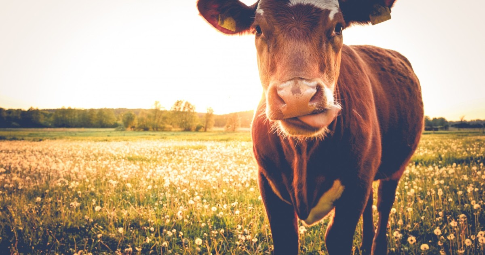
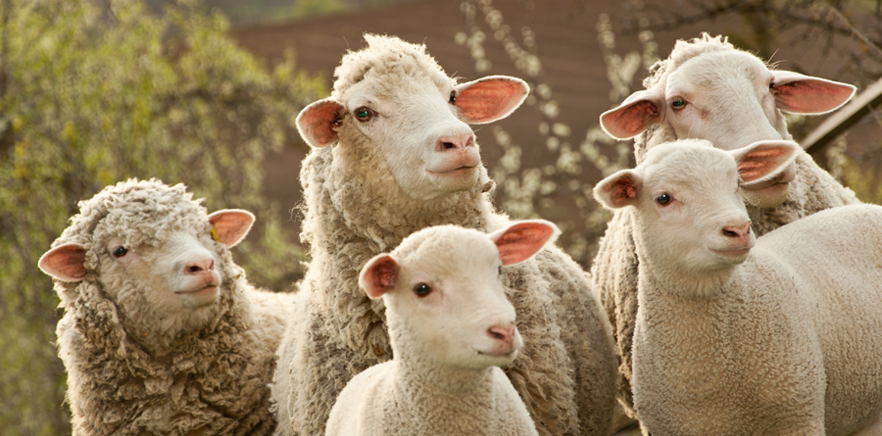

Carne Bovina
Carne bovina esse tipo de carne causa diversos danos ao meio ambiente. Sua alimentação é rica em energia, proteínas, minerais e vitaminas, por conta disso, a criação de bovinos exige vastas áreas de pastagem para que os animais possam se alimentar e crescer adequadamente. Esse processo pode levar à degradação do solo, à perda de biodiversidade e à destruição de habitats naturais para outras espécies animais e vegetais. Uma vez que, ao possuir muitas cabeças de gado, a alimentação destes seria equivalente a milhares de campos de futebol diariamente. Por conta disso os pecuaristas devem criar gados com moderação e fazer uma rotação de terra, para que seja possível o solo se regenerar e gerar menos malefícios a natureza. Além do mais, deve haver uma maior intervenção pública, que se volta apenas à questões econômicas e esquece das vidas que estão afetando.
Carne Cordeiro
Carne de cordeiro a produção de carne de cordeiro pode ter impactos significativos no meio ambiente. O principal problema associado à criação de cordeiros para a produção de carne é a intensa pressão que essa atividade exerce sobre os recursos naturais, incluindo terra, água e energia. Além disso, a criação de cordeiros requer grandes quantidades de água, o que pode levar a problemas de escassez de água em áreas onde a água é um recurso escasso. A produção de carne de cordeiro também tem um impacto significativo na emissão de gases de efeito estufa, contribuindo para as mudanças climáticas. Os cordeiros emitem metano através da digestão de alimentos, e a produção de carne envolve o uso intensivo de combustíveis fósseis em todas as etapas do processo, desde a produção de ração e energia para o transporte até o abate e processamento da carne. Como consumidores, podemos reduzir nosso impacto no meio ambiente escolhendo opções alimentares mais sustentáveis, como reduzir nosso consumo de carne ou optar por fontes de proteína mais ambientalmente amigáveis, como legumes, nozes e sementes.
